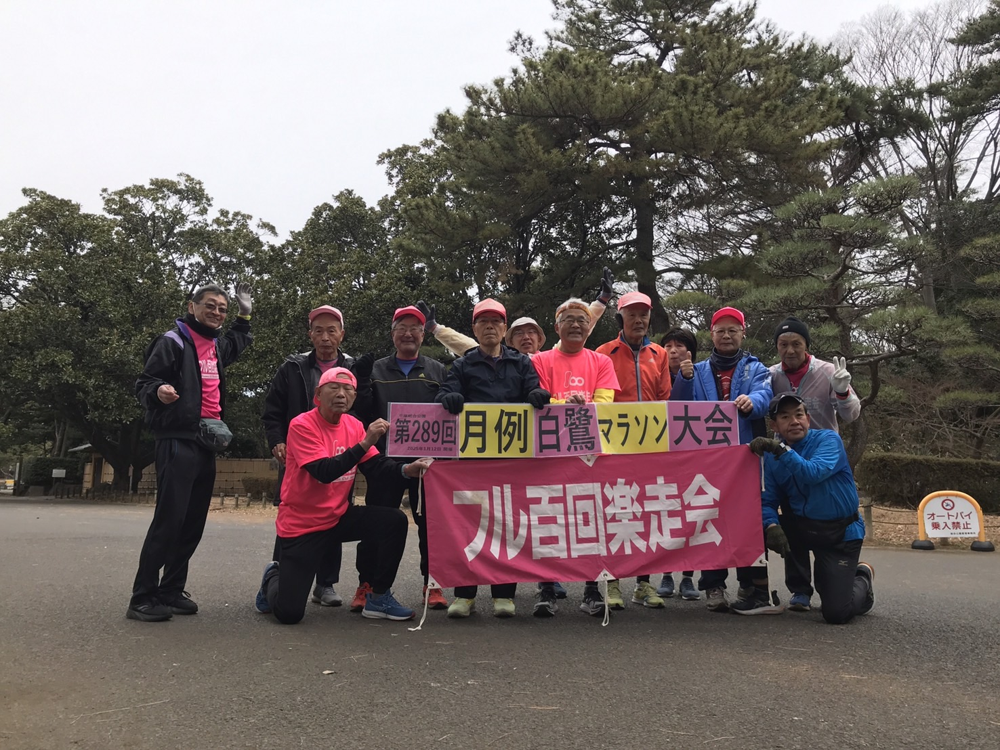

2025-01-12 05:16:27
2025年1月12日（日）平塚総合公園 曇り～晴れ～曇り 気温6.5～10.1℃ 担当（田中）
| No | 白鷺 | 氏 名 | 種目 | タイム | フル百 |
| 1 | 19 | 伊藤 晶 | フル | 5:35:13 | 900 |
| 2 | 503 | 池尻 彰 | フル | 5:45:33 | 894 |
| 3 | 89 | 辰巳 順一 | フル | 6:13:25 | ー |
| 4 | 333 | 山口 義治 | フル | 6:26:11 | 827 |
| 5 | 319 | 本内 克洋 | フル | 6:48:03 | 839 |
| 6 | 28 | 大野 清美 | フル | 7:42:48 | 532 |
| 7 | 30 | 竹田 昭彦 | フル | 8:15:02 | 3 |
| 8 | 98 | 田中 国貞 | フル | 8:29:08 | 746 |
| 9 | 442 | 山口 真澄 | 29.0㎞ | 5:58:20 | ー |
| 10 | 318 | 阿部 真 | 18.8㎞ | 3:34:16 | 818 |
| 11 | 157 | 佐藤 儀雄 | 17.1㎞ | 3:04:11 | 790 |
| 12 | 143 | 天野 稔 | 11.9㎞ | 2:40:02 | 780 |
| 13 | 403 | 飯田 和好 | 5.1㎞ | 0:34:13 | 881 |
| 14 | 340 | 島田八十美 | 5.1㎞ | 0:36:54 | 830 |
| 15 | 203 | 坪田 弘美 | 5.1㎞ | 1:08:54 | 148 |
今年初めての月例白鷺マラソン大会を開催しました。
かなりの悪天を覚悟していたのですが予報より良く、
昼頃には日差しもあり暖かく感じられました。
９時10分から恒例の新春セレモニーを開催しました。
* 山口会長 新春挨拶
* 竹田さん提供の金箔入り松竹梅での乾杯
* 写真撮影
池尻さん、山口会長からお菓子、田中からスダチの差し入れありました。
ありがとうございます。
